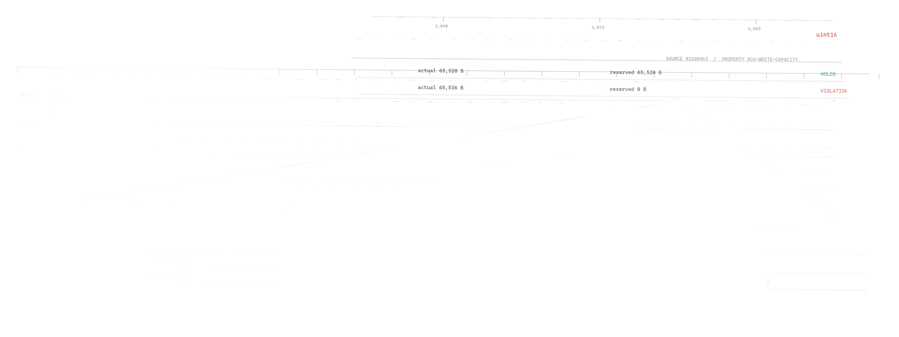

CO
CoordinatorFreeze target and properties

Counterexample Lab / Public case study
Change one boundary. Watch a machine-checked safety claim become a production violation.
The list remains representable through 4,095 entries.
Claim boundary: production serialization overflow reproduced from reconstructed post-authentication state. A full encrypted live-peer transcript was not established.
Public evidence / Sealed result
Every claim in the lab maps to preserved output from the pinned wolfSSL production build. Open either plate to inspect it at full resolution.
Five agents / One sealed protocol
The coordinator freezes one target and two framings. Investigators work in isolation; critics attack each result only after it is sealed.
The protocol begins with an unset verdict.
Evidence before claims
Hash the exact production source and freeze the property.
Run a real formal backend with explicit bounds and assumptions.
Reproduce against a fresh build with a useful negative control.
Make an independent critic try to break the claim.